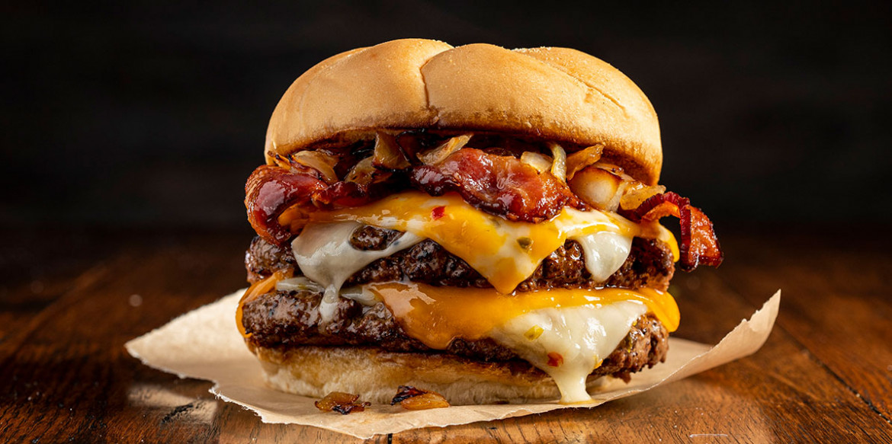

Cheeseburger is a natural evolution of the beloved hamburger, the only difference between the two being that the cheeseburger has a slice of cheese added on top of the meat patty. Although American cheese was the original choice, Swiss, Cheddar, and numerous blue cheeses were all used later to make this mouth-watering sandwich.
Meal prep time : 30 minutes
Servings : 6